A rota
Dia a dia
Osaka
11–13/03 · Conrad OsakaQui 11/03Chegada
Chegada no Kansai (KIX), trem Nankai Rapi:t até Namba e check-in no Conrad, no alto da torre de Nakanoshima.
Noite: Dotonbori — neon, takoyaki e jantar leve. Cama cedo por causa do fuso.
Sex 12/03O melhor de Osaka em um dia
Manhã: Castelo de Osaka com o jardim de ameixeiras (ume) em plena floração.
Tarde: mercado Kuromon (almoço nas bancas) e Shinsaibashi.
Noite: pôr do sol no Umeda Sky Building; kushikatsu em Shinsekai.
Monte Koya
13–14/03 · templo Eko-inSáb 13/03Subida à montanha sagrada
Malas grandes seguem por takkyubin Osaka → Kyoto; subimos só com mochilas: trem Nankai + funicular (~2h).
Tarde: complexo Danjo Garan e o cemitério de Okunoin na floresta de cedros milenares — com tour noturno guiado em inglês saindo do próprio templo.
Noite: jantar shojin ryori (culinária monástica) servido no quarto de tatame.
Dom 14/03Amanhecer com os monges
6h30: cerimônia matinal, ritual do fogo (goma) e meditação ajikan.
Manhã: descida e trem a Kyoto (~2h30); check-in no Nohga.
Fim de tarde: primeiro passeio por Gion e jantar nas vielas de Pontocho.
Kyoto
14–19/03 · Nohga Hotel KiyomizuSeg 15/03Leste histórico e Fushimi
Bem cedo: Fushimi Inari antes das 8h, até o mirante Yotsutsuji.
Tarde: Kiyomizu-dera e as ruas Sannenzaka/Ninenzaka.
Ter 16/03Rural: Miyama
Dia inteiro na vila de casas de telhado de palha (Kayabuki no Sato), com guia brasileiro e carro: museu folclórico, almoço caseiro, artesanato.
Qua 17/03O dia zen
8h em ponto: Ryoan-ji na abertura — o jardim seco de 15 pedras em silêncio, antes das excursões.
9h30: zazen guiado em inglês no templo Shunkoin (Myoshin-ji), a 10 min a pé.
Tarde: Kinkaku-ji e as ameixeiras do Kitano Tenmangu.
Qui 18/03Rural: Uji e a cerimônia do chá
Manhã: Byodo-in e caminhada à beira-rio.
Meio-dia: cerimônia do chá na casa Taihoan — municipal, pequena e genuína (¥1.000, reservar).
Tarde: moer o próprio matcha e degustar nas casas centenárias; opcional Wazuka.
Sex 19/03Arashiyama e partida
8h: bambuzal de Arashiyama e templo Tenryu-ji.
12h: malas por takkyubin Kyoto → Tóquio; Thunderbird a Kanazawa + ônibus a Shirakawa-go (chegada ~17h30).
Noite: jantar na irori da casa gassho, com a família anfitriã.
Shirakawa-go
19–20/03 · minshuku gassho-zukuriSáb 20/03A vila patrimônio da UNESCO
Manhã: vila de Ogimachi ao amanhecer, antes das excursões, e mirante Shiroyama — possivelmente com neve nos telhados.
13h: ônibus a Toyama + Hokuriku Shinkansen + trem a Gora. Chegada ao ryokan ~18h30, direto para o onsen e o kaiseki.
Hakone
20–21/03 · Gora KadanDom 21/03Fuji e chegada a Tóquio
Manhã: banho ao ar livre ao acordar; teleférico sobre Owakudani e barco no lago Ashi com o Fuji ao fundo.
Fim de tarde: Romancecar a Shinjuku; check-in no Chinzanso.
Tóquio
21–26/03 · Hotel Chinzanso TokyoSeg 22/03Asakusa e tradição
Senso-ji cedo, rua Nakamise e a margem do rio Sumida. À tarde, Kappabashi ou Akihabara. Noite nas izakayas da Hoppy Street.
Ter 23/03Harajuku e Shibuya
Meiji Jingu e Omotesando; Shibuya Sky ao pôr do sol (ingresso antecipado); noite em Omoide Yokocho.
Qua 24/03Jardins e primeiras flores
Shinjuku Gyoen — cerejeiras precoces e, com sorte, o início da floração principal. Ueno e Museu Nacional à tarde. À noite, o jardim iluminado do Chinzanso.
Qui 25/03Palácio, Ginza e despedida
Chidorigafuchi e Palácio Imperial; Ginza, depachika e teamLab Planets. Jantar de encerramento no Miyuki, com vista do jardim.
Sex 26/03Retorno
Voo de volta por Haneda/Narita. Deixem espaço na mala.
Imersões
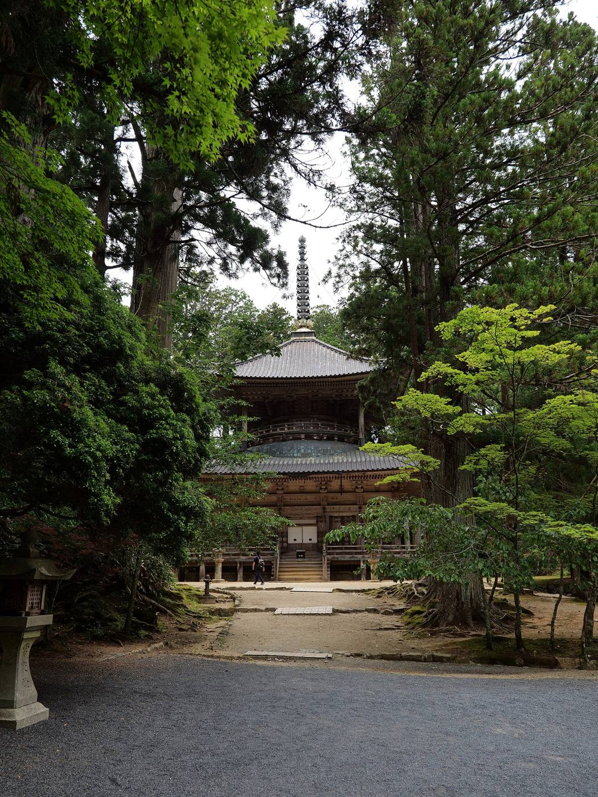
Noite no monastério
Templo Eko-in, em Koyasan: shojin ryori, tour noturno de Okunoin, ritual do fogo e meditação ao amanhecer.
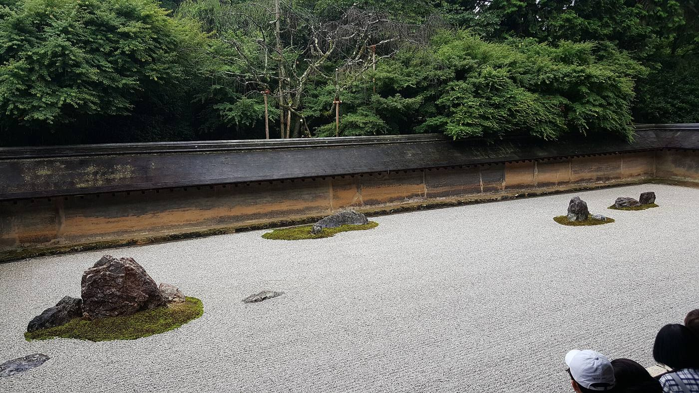
Ryoan-ji + zazen
O jardim seco na abertura, em silêncio — e zazen guiado em inglês no templo Shunkoin, a 10 minutos a pé.
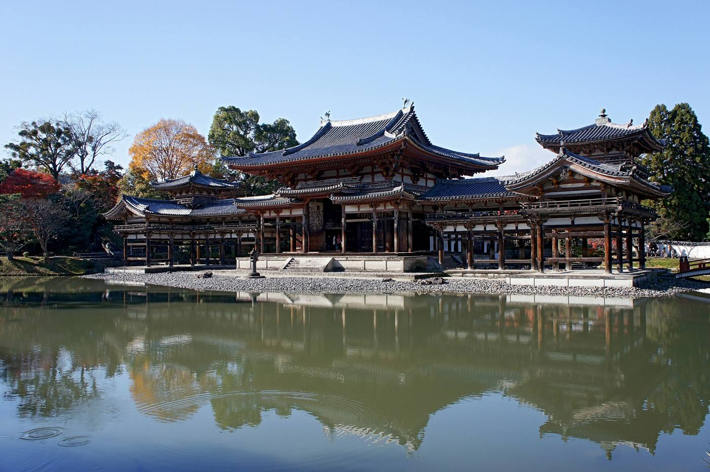
Cerimônia do chá
Casa Taihoan, em Uji: municipal, pequena e genuína — tatame, silêncio e o chá preparado diante de vocês.
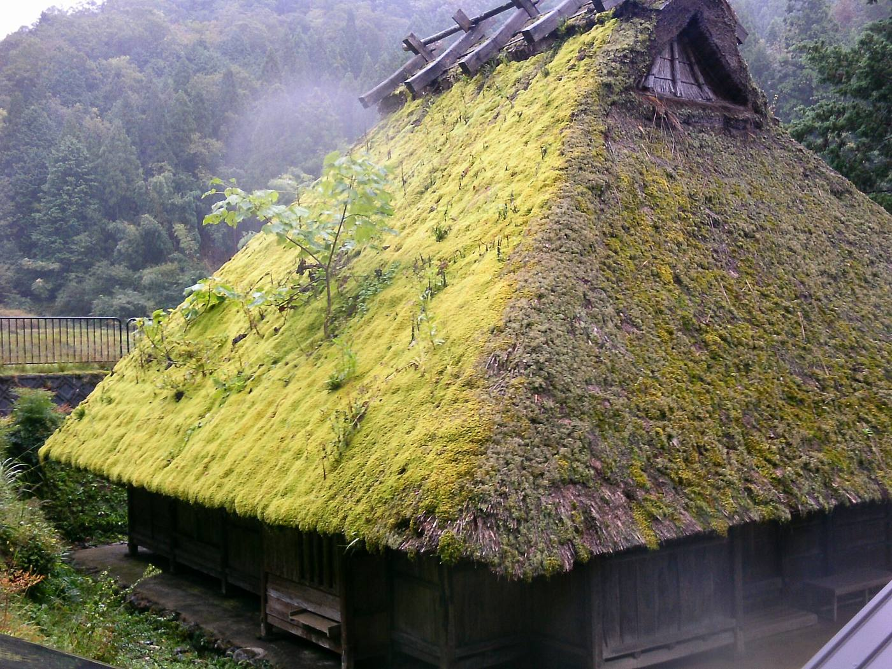
Miyama rural
Vilarejo habitado de casas kayabuki entre montanhas e arrozais, com guia em português e almoço caseiro.
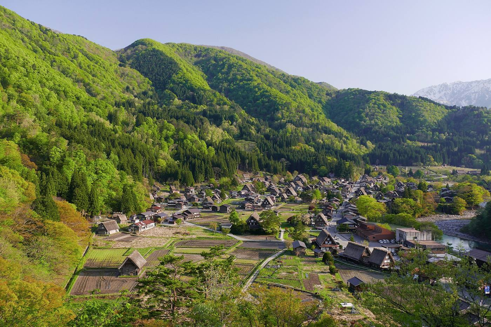
Noite na casa gassho
Shirakawa-go, patrimônio da UNESCO: futon no tatame e jantar na irori com a família anfitriã. Rústico e inesquecível.
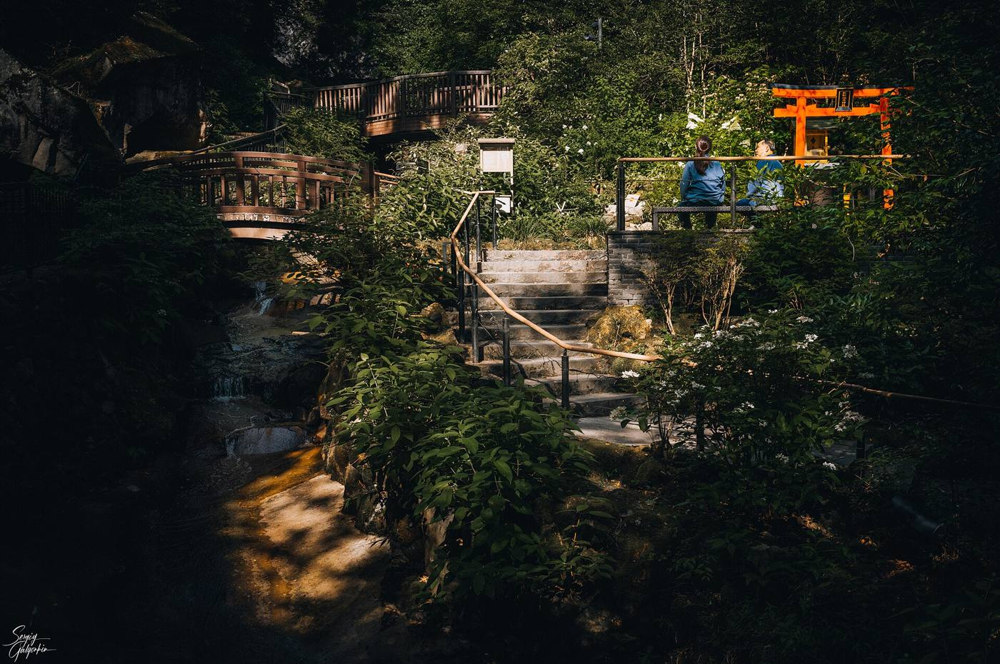
O ryokan clássico
Gora Kadan, antiga residência imperial de verão: onsen ao ar livre, kaiseki e omotenashi de manual.
Hospedagens
Conrad Osaka ★5
Lobby no 40º andar, vistas da cidade inteira.
R$ 5,6–8,0 mil
Templo Eko-in
Shukubo com refeições monásticas inclusas.
R$ 1,9–3,1 mil
Nohga Kiyomizu ★4
Em Gion, nota 9,8 — a pé do leste histórico.
R$ 6,2–10,0 mil
Casa gassho
Minshuku tradicional com jantar na irori.
R$ 1,5–1,9 mil
Gora Kadan
Ryokan Relais & Châteaux, meia pensão.
R$ 5,6–9,3 mil
Hotel Chinzanso ★5
Dentro de um jardim histórico com cerejeiras.
R$ 14–23 mil
Onde comer
Osaka — a cozinha do Japão
Mizuno
Desde 1945, a panqueca de Osaka feita na chapa diante de vocês. Fila anda rápido; vale cada minuto.
Daruma
A casa que inventou o espetinho empanado, em 1929. Regra de ouro: nunca molhar duas vezes no molho.
Kuromon Ichiba
Comer de banca em banca: vieiras grelhadas, sashimi de atum, morango branco. Almoço perfeito do dia 12.
Kyoto & Uji — tradição à mesa
Honke Owariya
Fundado em 1465 — o restaurante que servia soba aos monges e à corte imperial. Peçam o hourai soba.
Mercado Nishiki
"A cozinha de Kyoto": tofu, tsukemono, tamagoyaki e chá. Ótimo para beliscar entre os templos.
Nakamura Tokichi
Casa de chá de 1854: soba de matcha e o famoso parfait. Encaixa perfeito após a cerimônia na Taihoan.
Tóquio — do balcão à despedida
Daikokuya
Tendon (tempurá sobre arroz) desde 1887, a poucos passos do Senso-ji — almoço do dia 22.
Omoide Yokocho
O beco dos anos 40: espetinhos na brasa, fumaça e balcões de 6 lugares. Sentar onde houver vaga.
Maisen
O tonkatsu mais famoso da cidade, servido num antigo balneário — perto do Meiji Jingu, dia 23.
Guias em português
Coisas do Japão
Equipe de guias brasileiros há 20+ anos em Tóquio, Kyoto, Osaka e Nara.
coisasdojapao.com · WhatsApp +81 80-8840-9662
O Guia do Japão (Hiro)
Especialista em Kyoto (300+ tours), história e cultura; consultoria por Zoom.
oguiadojapao.com
Hachi Japan
Tours de carro privativo — ideal para os dias rurais e o conforto dos pais.
hachijapan.com
GoHanTour
Tours gastronômicos em português em Tóquio: Tsukiji, izakayas e bairros locais.
gohantours.com
Informações práticas
- Voos: multidestino GRU→Osaka (KIX) / Tóquio→GRU. Faixa atual: R$ 6.000–9.000/pessoa; promoções Qatar a partir de R$ 5.880.
- Dinheiro: ¥1.000 ≈ R$ 31. Levar espécie (¥40–60 mil/casal) — Koyasan e Shirakawa-go são quase só dinheiro vivo. Saques no 7-Eleven; Wise/Nomad em iene.
- Suica no celular antes de embarcar; funciona em todas as cidades e lojas.
- JR Pass não compensa: a rota usa muitas linhas privadas; trechos JR avulsos somam ~¥28.000/pessoa.
- Malas por takkyubin nos trechos Koyasan e Shirakawa-go→Hakone — circulamos só com mochilas de pernoite.
- Clima de março: 6–15 °C nas cidades; 0–8 °C em Koyasan e Shirakawa-go (possível neve). Casaco quente e calçado fácil de tirar.
- Visto: brasileiros não precisam (turismo até 90 dias). Preencher o Visit Japan Web na semana do voo.
- Seguro viagem (~R$ 400–500/pessoa) e eSIM (Ubigi/Airalo, ~R$ 100–150).
Postais do roteiro
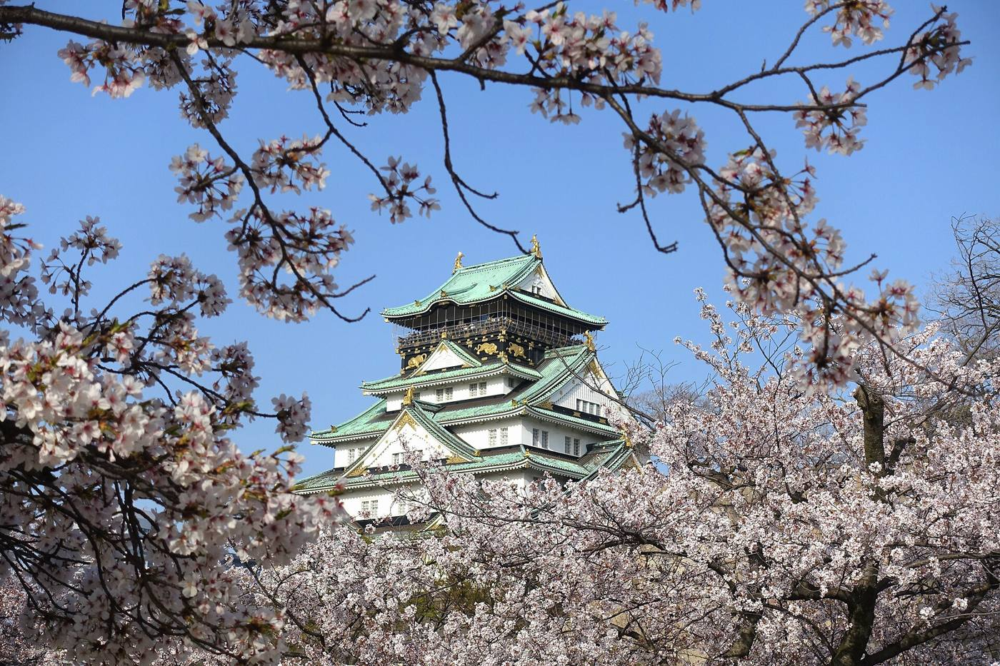
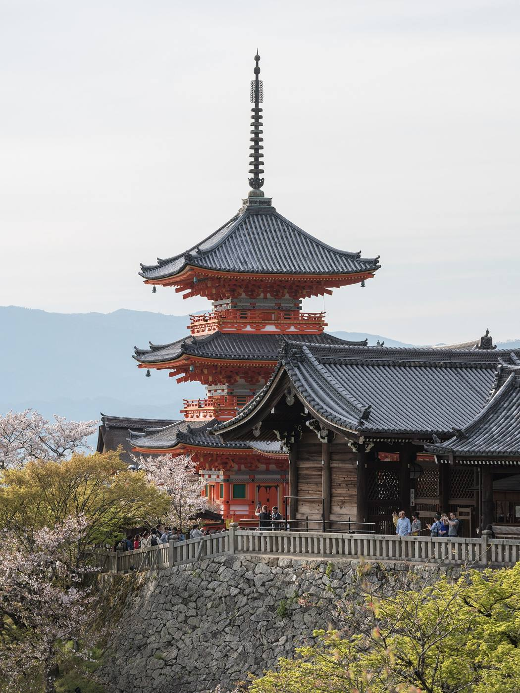
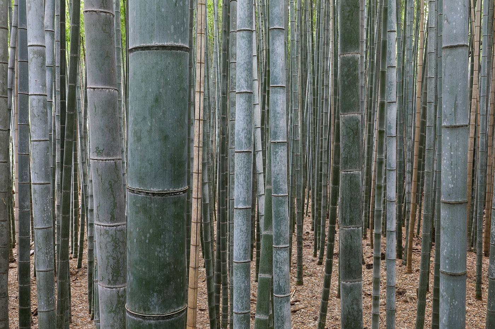
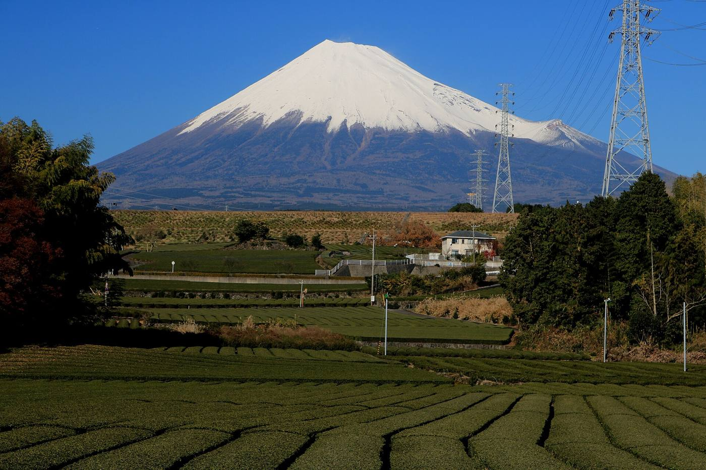
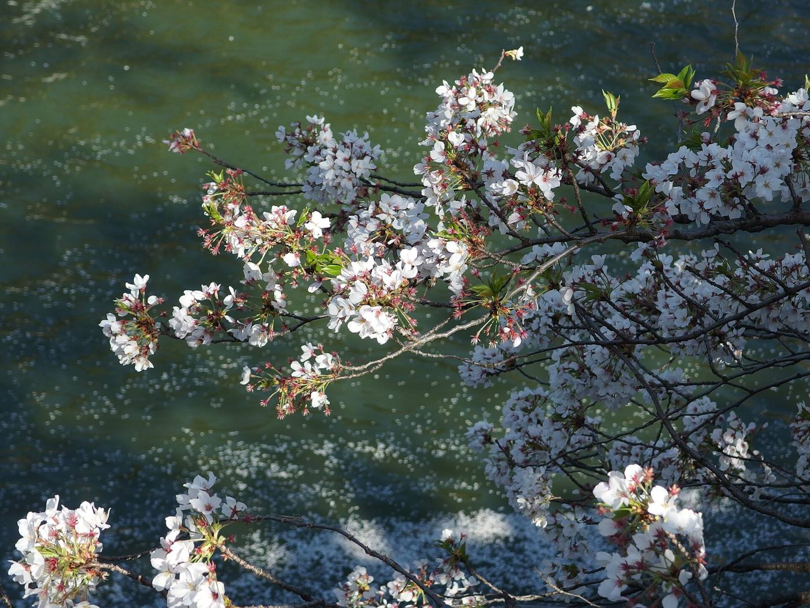
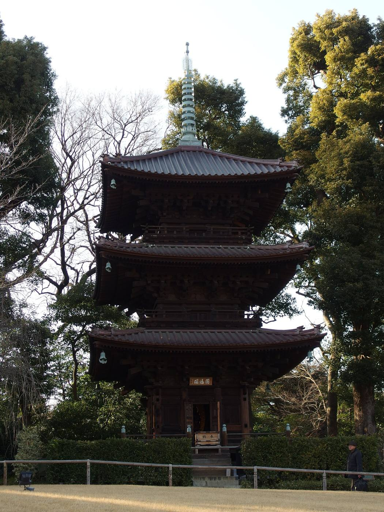
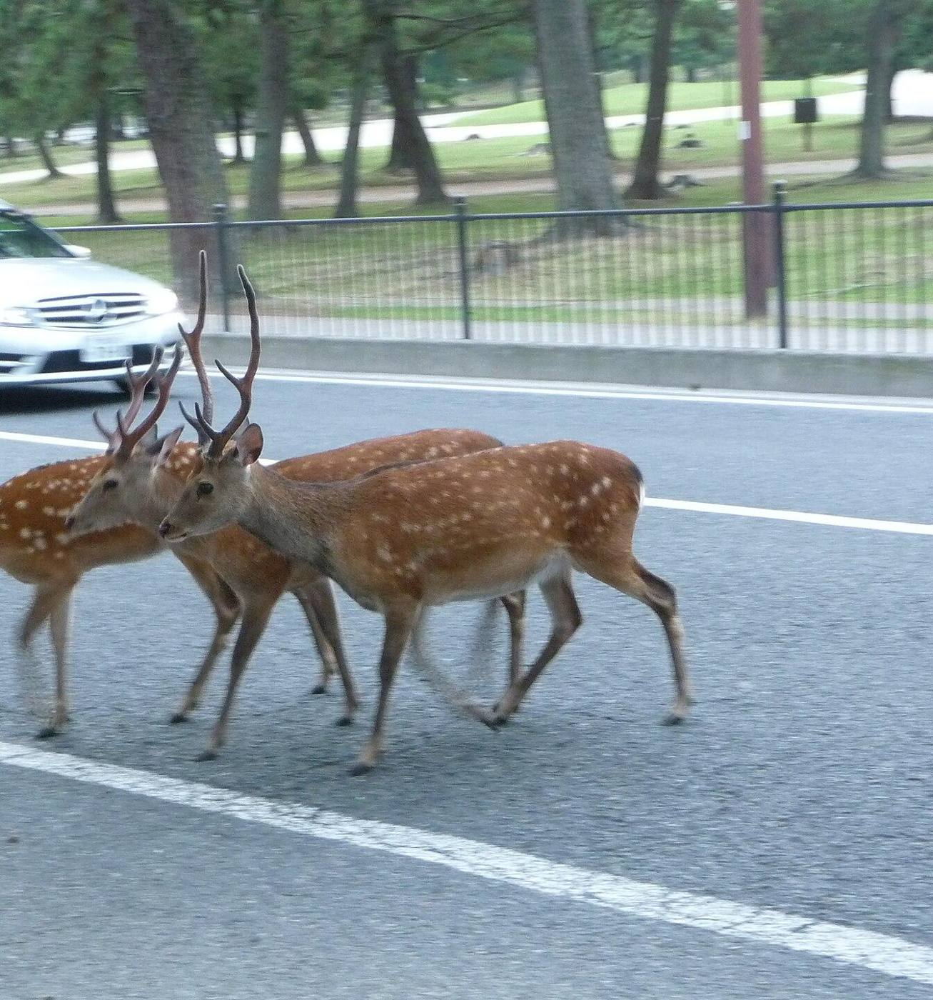
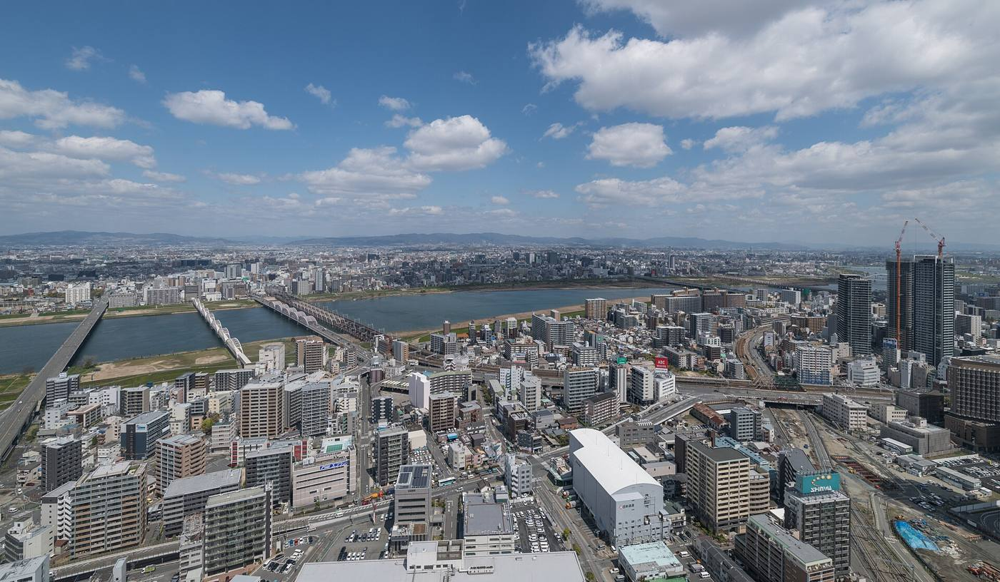
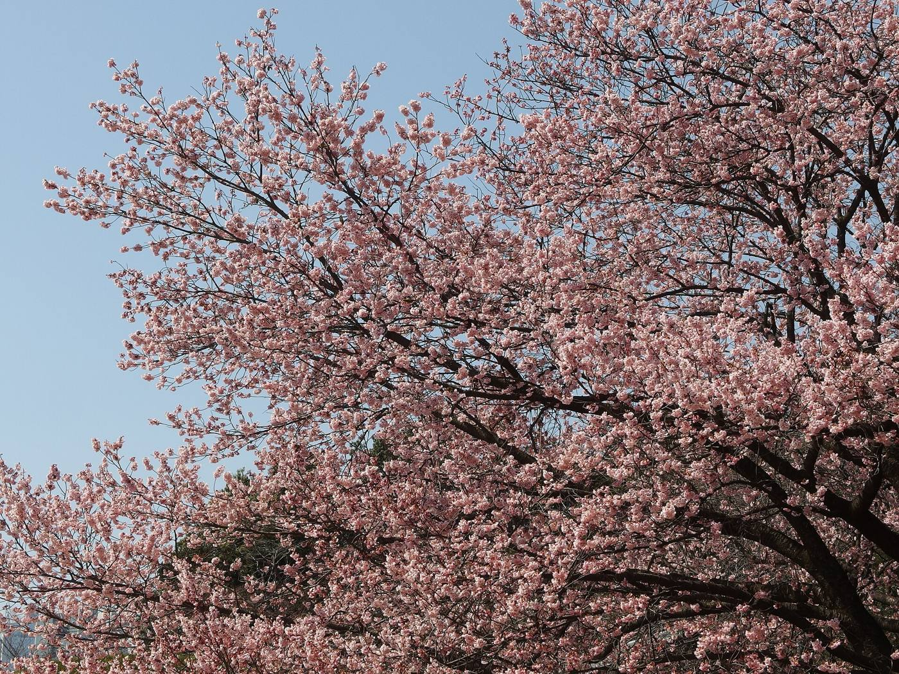
Glossário
- Sakura
- cerejeira; a flor e a própria temporada de floração.
- Ume
- ameixeira japonesa; floresce antes da sakura.
- Hanami
- contemplar as flores — o piquenique sob as cerejeiras.
- Ryokan
- hospedaria tradicional com tatame, futon e refeições.
- Onsen
- banho termal; banha-se sem roupa, após lavar-se sentado.
- Kaiseki
- jantar tradicional de vários pratos sazonais.
- Yukata
- robe de algodão do ryokan — use sem cerimônia.
- Shukubo
- hospedagem dentro de um templo budista.
- Shojin ryori
- culinária vegetariana dos monges.
- Zazen
- meditação zen sentada.
- Karesansui
- jardim seco de pedras, como o do Ryoan-ji.
- Goma
- ritual do fogo celebrado ao amanhecer em Koyasan.
- Ajikan
- meditação da escola Shingon, praticada em Koyasan.
- Gassho-zukuri
- casa de telhado íngreme de palha de Shirakawa-go.
- Minshuku
- pousada familiar simples com refeições caseiras.
- Irori
- lareira aberta no chão das casas tradicionais.
- Izakaya
- bar japonês de petiscos e bebidas.
- Takoyaki
- bolinhos de polvo, símbolo de Osaka.
- Kushikatsu
- espetinhos empanados e fritos, de Osaka.
- Matcha
- chá verde em pó — a especialidade de Uji.
- Konbini
- loja de conveniência 24h com comida boa e barata.
- Depachika
- andar gastronômico das lojas de departamento.
- Takkyubin
- envio de bagagem porta a porta.
- Shinkansen
- trem-bala.
- Torii
- portal vermelho de santuário xintoísta.
- Machiya
- casa urbana tradicional de madeira de Kyoto.
- Omotenashi
- a hospitalidade japonesa: antecipar sem que se peça.
Japonês de bolso
Checklist
- Agora: voos 10/03 e 26/03 · Gora Kadan e casa gassho (Koemon/Magoemon — esgotam com ~1 ano) · Eko-in · demais hotéis canceláveis · fechar guias.
- Nov–jan: seguro viagem · passaportes (6+ meses) · zazen no Shunkoin · cerimônia do chá Taihoan · acompanhar a previsão de floração.
- Fevereiro: Shibuya Sky e teamLab · Thunderbird, Hokuriku Shinkansen e Romancecar · ônibus de Shirakawa-go (reserva obrigatória).
- Semana do voo: eSIM · Suica no celular · Visit Japan Web · mapas offline · ienes em espécie.